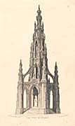

|
|
Home | Corson
Collection | Biography | Works | Image
Collection | Recent Publications | Portraits | Correspondence | Forthcoming
Events | E-texts | Contact
1.
Pages for Scott-Related projects and organisations
- The Edinburgh Sir Walter
Scott Club - Home site for a club that has been in existence
for over a century and which aims 'to foster the name of
Sir Walter Scott through meetings, lectures, publications
and excursions'. The site presents membership and contact
details, a list of events put on by the club, selected articles
from the Club's Annual Bulletin, and links to other Scott-related
sites.
- Edinburgh
University Press - Home page of the publishers of the
Edinburgh Edition of the Waverley Novels. Although there
is currently no unified page for the edition, details of
individual volumes can be gleaned from the catalogue pages.
- Save Scott's Countryside -
Home page for a non-profit-making organisation opposed to development
of Sir Walter Scott's lands between Abbotsford and
Melrose. The site features a discussion of the planning issues,
photographs of sites under consideration for development, news
and events pages.
- Walter
Scott Research Centre (University of Aberdeen) - Information
page for potential graduate students on a centre established
in 1991 which provides the potential for Scott to be studied
in a variety of contexts including Romanticism, 19th century
Irish literature, Scottish art, Scots language, Victorian
literature, and British, European and American politics.
The main focus of the Centre's activities to date has been
the completion of the Edinburgh Edition of the Waverley Novels,
published by Edinburgh University Press (see above).
The page describes the Centre's resources, including the
Bernard C. Lloyd Walter Scott Collection, and outlines related
courses and resources offered by the School
of Language & Literature.
Back to top
2.
General Pages on Scott's Life and Works
The following is a selection of online introductions
to Scott. The sites and pages below provide a general overview
of Scott's life and work, basic bibliographical information, an
assessment of Scott's literary achievement, and/or seek to situate
him within his literary and historical context. For links which
focus more narrowly on Scott's biography, click here.
- A
Brief History of Western Culture - This essay by poet
and naturalist Michael Peverett provides a guide to each
of Scott's novels (with ratings out of 10, leaning heavily
towards the earlier 'Scottish' novels), together with more
detailed analyses of The
Abbot, The
Antiquary, Old
Mortality, Quentin
Durward, Rob
Roy, and Woodstock.
There are further notes on Scott's poetical works and on Tales
of a Grandfather.
- Central
Oregon Community College Coarse Pack - Part of Prof.
Cora Agatucci's course pack for an English Seminar, this
page contains extracts from online biographies of Scott,
a list of his works, a brief secondary bibliography, and
extracts from Gary Davenport's article 'Looking Back to the
Present', Sewanee Review, 103 (1995) and Rohan Maitzen's
article '"By no mean an improbable fiction": Redgauntlet’s
Novel Historicism', Studies in the Novel, 25 (1993).
- The Daily Sir
Walter - A blog collecting date-specific
facts, events, and quotations and relating
them to Scott's life
and works. The emphasis is on Scottish history, economics,
and creative thought.
- Kalliope -
Part of a poetry archive run by Jesper Christensen, these pages
includes a bibliography of Scott's poetic works, a timeline,
a list of Scott's international contemporaries, and a link
to e-texts of three Scott lyrics ('County Guy', 'Jock of Hazeldean',
and 'Lullaby of an Infant Chief'). This is a Danish-language
resource but the e-texts are in the original English or Scots.
- Learning
Journeys: Sir Walter Scott, 1771-1832 - Part of the BBC's Learning
Journeys: Tartan Myths pages, compiled by Carl MacDougall,
novelist and presenter of the Writing
Scotland TV series, the Scott pages consist of a good
brief biography, an analysis of The
Lady of the Lake, Waverley, Rob
Roy, The
Heart of Mid-Lothian, and Redgauntlet (with
particular emphasis on Scott's treatment of the Highlands
and Jacobitism), and a bibliography of primary and secondary
texts.
- The
Literary Encyclopedia - Detailed biographical and critical
essay by Nathan Uglow (Leeds Trinity & All Saints) with
links to Scott-related sites and an excellent timeline. Click here for
links to further essays in the Literary
Encylopedia devoted to individual works by Scott (The
Bride of Lammermoor, The
Heart of Mid-Lothian, The
Lady of the Lake, The
Lay of the Last Minstrel, A
Legend of Montrose, Marmion, Minstrelsy
of the Scottish Border, Old
Mortality, The
Pirate, Redgauntlet, Rob
Roy, and Waverley). (Now
subscription only.)
- Lucidcafé -
From Robin Chew's site, this page includes a biography, an
annotated bibliography of major works, a list of Scott-related
videos, and links to websites and e-texts.
- Scottish
Authors - Part of the SLAINTE (Scottish
Libraries Across the Internet) site, this is a critical and
biographical piece on Scott by Professor Ian Campbell (University
of Edinburgh), extracted from the Scottish Library Association's
booklet Discovering Scottish Writers.
- Sir Walter
Scott by Sergio Clavijo Ruiz - Detailed biographical
pages from an undergraduate in the English Department of
the University of Valencia together with an analysis of his
verse and fiction, and links to external sites.
- Sir Walter
Scott by Maria Flor Roda Mota - Detailed biographical
pages from an undergraduate in the English Department of
the University of Valencia (Spain),
accompanied by a consideration of Scott's achievement and
pages on issues critical to Scott's work ('Punishment', 'Romance',
and 'Scott and Shakespeare').
- The
Victorian Web - This page offers links to a biography and chronology,
to a page on selected
works (with links to synopses of Waverley, The
Heart of Midlothian, The
Bride of Lammermoor, Ivanhoe,
and 'The
Highland Widow'), and to essays on the Victorians'
love of Scott, on Scott
and drama, on Scott
and book illustration, and on Scott's literary sources
(Fielding)
and successors (R.D.
Blackmore, Elizabeth
Barrett Browning).
- Wikipedia -
Detailed bio-biographical page, including an account of Scott's
life and career, a discussion of Abbotsford and
of his financial difficulties, a (lukewarm) critical assessment,
and a list of links to pages on writers influenced by Scott.
Like all Wikipedia entries,
the text is subject to constant revision by readers. See Pages
on Particular Works by Scott for the Wikidepia entries
on individual poems and novels by Scott.
Back to top
3.
Foreign-Language Pages on Scott's Life and Works
Catalan | Czech | French | Italian | Polish | Spanish
Catalan
- Música
i literatura - Susagna Argemí's Catalan-language
page provides a succinct biography and discusses Scott's
reception in nineteenth-century Catalonia. It includes an
audio link to Schubert's setting of 'Hymn to the Virgin'
('Ave Maria! Maiden mild!') from The
Lady of the Lake and links to the German, English,
and Catalan text of the song.
Back to List of Languages
Czech
Back to List of Languages
French
- 19e.org -
Detailed French-language biographical page from Marc Nadaux's
immense bio-bibliographical resource devoted to the historical
period 1815-1914.
Back to List of Languages
Italian
- A.L.K.
Libri - This Italian-language online literary journal
offers a concise bio-bibliographical page with consideration
of Scott's contribution to world literature and link to page
on Ivanhoe.
- Antenati -
From an online history of European Literature, this Italian-language
page gives a succinct bio-bibliographical account of Scott
and considers his relationship with Romanticism.
Back to List of Languages
Polish
Back to List of Languages
Spanish
- El Poder
de la Palabra - From a site devoted to poetic prose,
this Spanish-language pages gives a brief biographical account
and discusses Scott's impact on Spanish and Latin American
literature in the nineteenth century. There are links to
images of the Sir Thomas Lawrence and Raeburn
(1808) portraits.
Back to List of Languages
Back to top

Back to Index
of Links
Last updated: 25-Nov-2011
© Edinburgh University Library
|
|